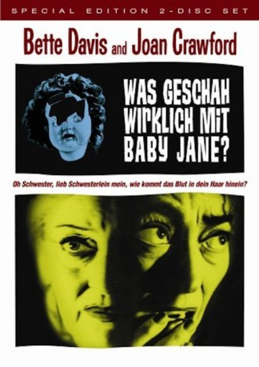

#5233 Was geschah wirklich mit Baby Jane?
Alternativ: What Ever Happened to Baby Jane?
Auszeichnungen: 1 Oscars gewonnen für 4 Oscars nominiert
 
 IMDB-Wertung: 8.1 / 10
IMDB-Wertung: 8.1 / 10  IMDB-TOP-Platzierung: 249
IMDB-TOP-Platzierung: 249  Metascore: 0
Metascore: 0 
Einst war Baby Jane Hudson ein gefragter Kinderstar - als erwachsene Frau hatte sie jedoch nie Erfolg. Ihre Schwester Blanche hingegen wurde ein gefeierter Filmstar, der groß Karriere machte. Doch dann kam es zu einem entsetzlichen, und gleichzeitig mysteriösen Autounfall. Seitdem kann Blanche nicht mehr gehen. Ihre Schwester Jane kümmert sich nun „liebevoll“ und „aufopfernd“ um sie. Doch Liebe ist schon lange nicht mehr im Spiel. Hass und Verachtung stehen an der Tagesordnung. Die schwer psychisch angeschlagene Jane demütigt ihre Schwester, wo sie nur kann...
Jahr: 1962
Dauer: 133 Minuten
FSK: 16
Land: USA Studio: Warner Bros.Tonspuren:
Untertitel: Englisch,
Auflösung: 1080p (1920x1080) Größe: 9144 MB
Genre: Thriller, Horror, Drama
Regisseur: Robert Aldrich
Drehbuch: Don Tait
Soundtrack:
Darsteller:
 Bette Davis als Baby Jane Hudson
Bette Davis als Baby Jane Hudson- Joan Crawford als Blanche Hudson
 Victor Buono als Edwin Flagg
Victor Buono als Edwin Flagg Wesley Addy als Marty Mc Donald
Wesley Addy als Marty Mc Donald Marjorie Bennett als Dehlia Flagg
Marjorie Bennett als Dehlia Flagg Bert Freed als Ben Golden
Bert Freed als Ben Golden- Anna Lee als Mrs. Bates
- Maidie Norman als Elvira Stitt
 Dave Willock als Ray Hudson
Dave Willock als Ray Hudson- Russ Conway als Police Officer
- Robert Cornthwaite als Dr. Shelby
- Michael Fox als TV Commercial Man
- Gina Gillespie als Blanche Hudson, in 1917
 James Seay als Police Officer
James Seay als Police Officer- Murray Alper als Projectionist , uncredited
 Jack Tornek als Man Buying Newspaper , uncredited
Jack Tornek als Man Buying Newspaper , uncredited- Julie Allred als Baby Jane Hudson, in 1917
- Anne Barton als Cora Hudson
- William Aldrich als Lunch Counter Assistant at Beach
- Maxine Cooper als Bank Teller
- Barbara Merrill als Liza Bates
- Don Ross als Police Officer
- John Shay als Police Officer
- Jon Shepodd als Police Officer
- Peter Virgo als Police Officer
- Bobs Watson als Clerk in Newspaper Classified Ad Department
- Debbie Burton als Singing Voice
- Ernest Anderson als Ernie, Ice Cream Vendor at Beach , uncredited
- Steve Condit als Boy in Audience , uncredited
- Norman Papson als Beach Boy , uncredited
- Mike Ragan als Police Officer , uncredited
- Sammy Shack als Theatre Patron , uncredited
- Michael St. Angel als Bank Manager , uncredited
Datei: X:\1962\Was geschah wirklich mit Baby Jane (1962, FSK16, 1920x1080).mkv seit 03.01.2017
Festplatte: HD 1900-1970
 Es gibt insgesamt 23 Filme in der Gruppe '1962'
Es gibt insgesamt 23 Filme in der Gruppe '1962'